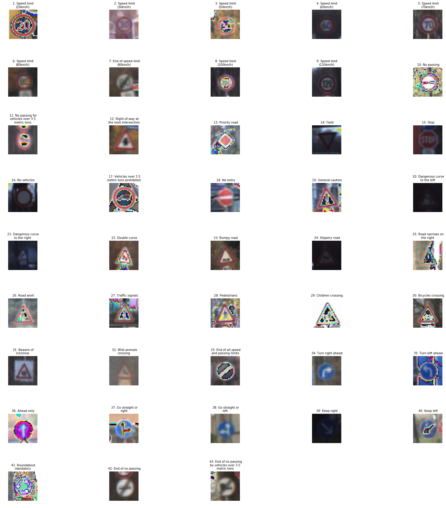

Traffic Sign Recognition
Goals
- Load the data set (see below for links to the project data set)
- Explore, summarize and visualize the data set
- Design, train and test a model architecture
- Use the model to make predictions on new images
- Analyze the softmax probabilities of the new images
- Summarize the results with a written report
Rubric Points
Here I will consider the rubric points individually and describe how I addressed each point in my implementation.
Writeup / README
1. Provide a Writeup / README that includes all the rubric points and how you addressed each one. You can submit your writeup as markdown or pdf. You can use this template as a guide for writing the report. The submission includes the project code.
links
Notes on the Code
- A non-trivial (270 lines) part of the implementation is in tsc_datadict.py which
- loads the data from a
- pickle file
- or a directory containing
- image files
- a csv file of the format filename, label
- calculates the number of classes and creates a dictionary mapping classes to class names from signnames.csv
- creates a dictonary mapping from the classes to the indices of the images in the dataset of that class(please see detailed comments in the code for the organize_signs_by_id() method)
- selects signs to be displayed in the dataset visualization by two different methods
- for the pickled data set, select the first index in each class
- for the downloaded signs, select all the signs
- provides methods to be called later, from the ipynb, to:
- show the sample signs
- show histograms of the class distribution of the signs in the data set for the set of categories(ex: train, valid, test) passed to the datadict constructor
- preprocess the images in the dataset
- print a summary of the dataset
- loads the data from a
Data Set Summary & Exploration
1. Provide a basic summary of the data set. In the code, the analysis should be done using python, numpy and/or pandas methods rather than hardcoding results manually.
The summary is calculated by the __ init__() method and displayed by the summarize() method of the DataDict class. The result, from the ipynb, is:
Number of training examples = 34799
Number of validation examples = 4410
Number of testing examples = 12630
Image data shape = (32, 32,3)
Number of classes = 43
2. Include an exploratory visualization of the dataset.
In the selected signs(selection criteria described above) we can clearly see the effects of normalization and variations in image sharpness and lighting.

Here are the histograms showing the distribution of the signs instances by class
Visually, they seem quite similar
Design and Test a Model Architecture
1. Preprocessing
I only implemented normalization of rgb values to [-1, 1] and resizing to 32x32x3. Resizing was required because the image(discussed later) downloaded from the web were larger and so did not work with the model’s input layer. Normalization accounted for a bit less than 2% improved accuracy which was sufficient to get over the 93% threshold.
2. Model Architecture
The model was a straight forward adaptation of my the model from the LeNet lab as described in the class video. The input layer was changed to 32x32x3 and the output changed from 10 to n_classes(43)

My final model consisted of the following layers:
| Layer | Description |
|---|---|
| Input | 32x32x3 RGB image |
| Convolution 5x5x3 | 1x1 stride, valid padding, outputs 28x28x6 |
| RELU | |
| Max pooling | 2x2 stride, Output = 14x14x6, valid padding |
| Convolution 5x5x3 | 1x1 stride, valid padding,Output = 10x10x16 |
| Max pooling | 2x2 stride, Output = 5x5x16, valid padding |
| Flatten | 5x5x16 -> 400 |
| Fully connected | 400 -> 120 |
| Relu | |
| Fully connected@ | 120 -> 84 |
| Relu | |
| Fully connected@ | 84 -> 43 |
3. Model Training
I have a fairly robust CPU so I used that for training with the following hyperparameters:
learning_rate -> 0.00095
mu -> 0
sigma -> 0.1
EPOCHS -> 128
BATCH_SIZE -> 64
GOOD_ENOUGH -> 0.97
I did not use dropout and I believe dropout and/or generating additional images with affine transforms and lighting changes would produce better results. Perhaps also increasing the learning rate would help. With the current set of hyperparameters there seemed to be little improvement after the 100th epoch.
To train the model, I used an …
4. Describe the approach taken for finding a solution and getting the validation set accuracy to be at least 0.93. Include in the discussion the results on the training, validation and test sets and where in the code these were calculated. Your approach may have been an iterative process, in which case, outline the steps you took to get to the final solution and why you chose those steps. Perhaps your solution involved an already well known implementation or architecture. In this case, discuss why you think the architecture is suitable for the current problem.
I chose LeNet because it was suggested in the course videos. Even though LeNet was originally designed for recognizing MNIST characters, my potentially naive view of why that was suggested was that recognizing “segments” in characters and their spatial relationships was relevant to sign classification because those attributes are present in signs.
My final model results were:
- validation set accuracy of 0.947(highest for any epoch was 0.952)
- test set accuracy of 0.930
Test a Model on New Images
1. Download German Traffic Signs
I downloaded GTSRB_Final_Test_Images.zip from http://benchmark.ini.rub.de/?section=gtsrb&subsection=dataset
Here are seven German traffic signs that I found on the web:


2. Model Performance on Downloaded Signs
Here are the results of the prediction:
| Image | Prediction |
|---|---|
| 30 kph | 30 kph |
| caution | U-turn |
| straight | straight |
| right | right |
| signals | signals |
| 60 kpn | 60 kph |
The model was able to correctly guess 4 of the 5 traffic signs, which gives an accuracy of 80%. This compares favorably to the accuracy on the test set of …
3. Predicition Certainty
The code for making predictions on my final model is located in the 2h cell of the Ipython notebook.
As can be seen from the following the model is highly certain (1.0). This is doubtless a consequence of picking images that were sharp and well lit. It is interesting to know that not all of the lower 4 predictions are zero. Some of them are very small non zero values.
[[1.00000e+00 1.45429e-24 7.08256e-35 0.00000e+00 0.00000e+00]
[1.00000e+00 1.84673e-38 0.00000e+00 0.00000e+00 0.00000e+00]
[1.00000e+00 1.04243e-22 9.17256e-32 8.08734e-32 5.27130e-32]
[1.00000e+00 0.00000e+00 0.00000e+00 0.00000e+00 0.00000e+00]
[1.00000e+00 0.00000e+00 0.00000e+00 0.00000e+00 0.00000e+00]
[1.00000e+00 0.00000e+00 0.00000e+00 0.00000e+00 0.00000e+00]
[1.00000e+00 0.00000e+00 0.00000e+00 0.00000e+00 0.00000e+00]]